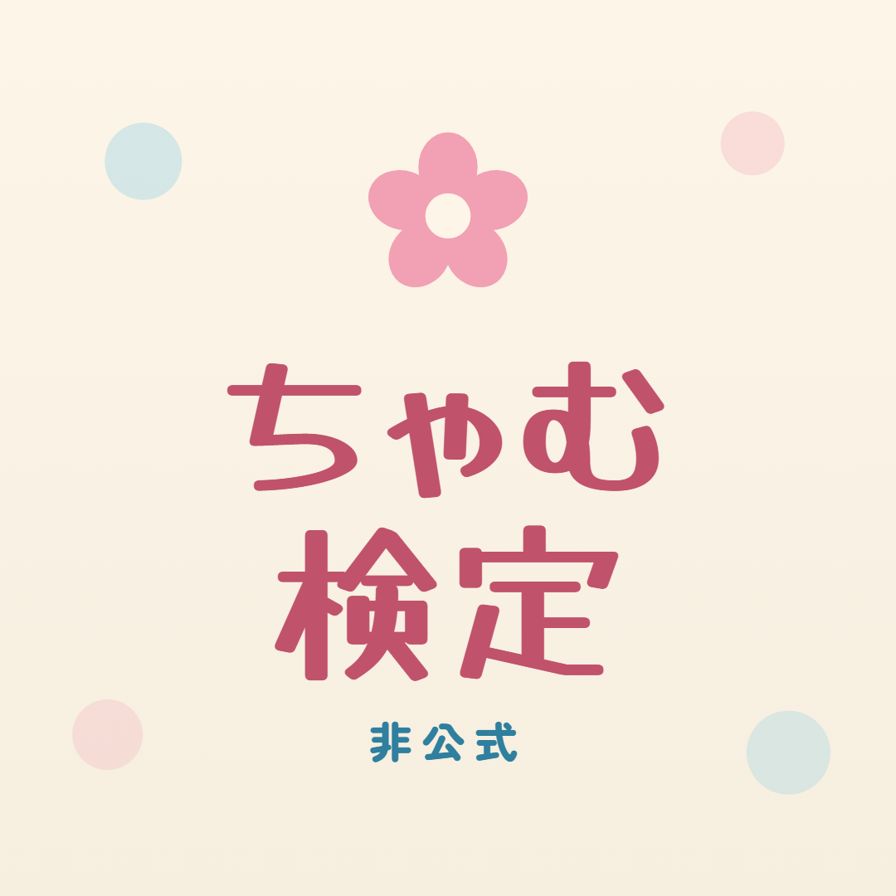
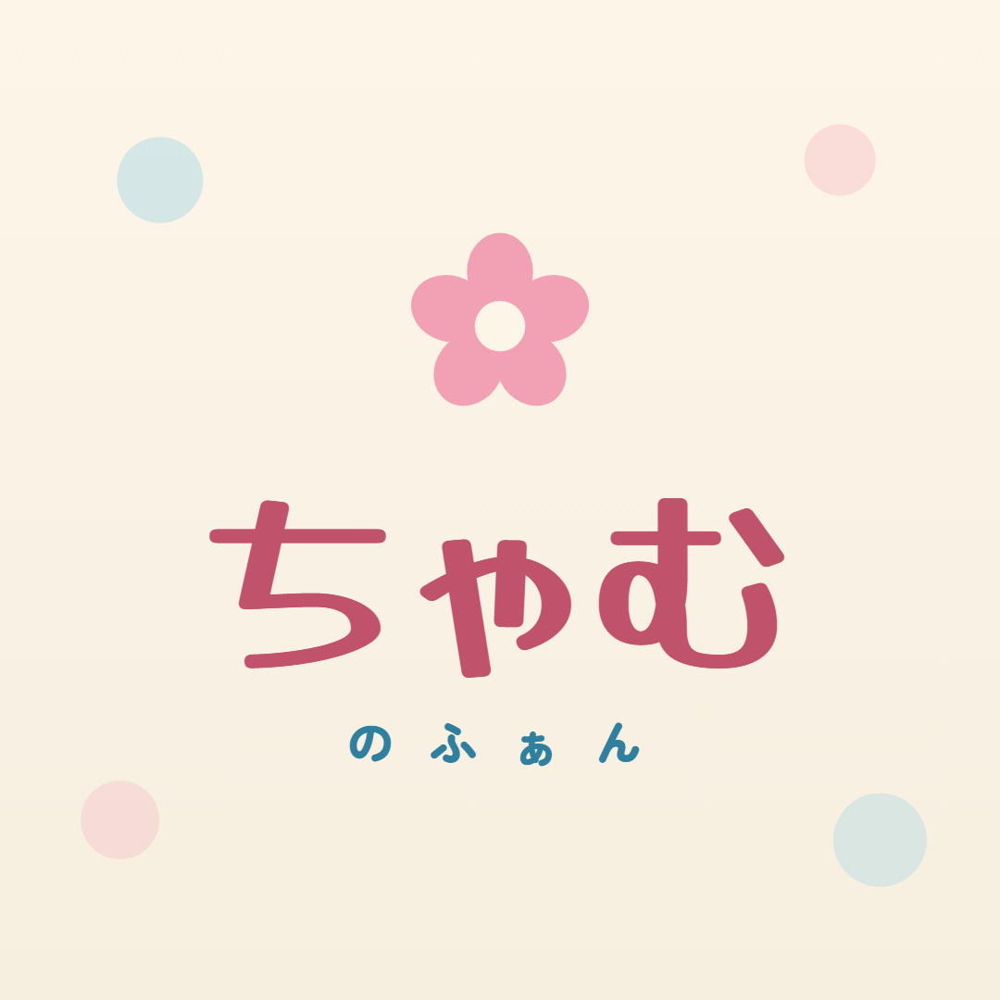

スマホでこのページを開いて、コピーと画像の保存をするだけ。
自分用なので、一覧からはリンクしていません。
Instagram の「プロフィールを編集」→「名前」に貼る。検索に当たるのはユーザーネームではなくこちら。
「自己紹介」に貼る。約110字。絵文字は入れない決まり。
「リンク」欄に貼る。カルーセルの締めの「プロフィールのリンクから」が、これで成立する。
画像を長押しして保存 → プロフィール写真に設定する。おすすめはB。Aはクイズが看板に見えるため。

A ちゃむ検定
B ちゃむのファン1枚ずつ長押しして保存し、この番号の順にカルーセルへ並べる。人間チェック済みの束。
最新回「AIおじさん2」から5問。人間チェック済み（2026-09-06）。
第1話から第3話まで。人間チェック済み（2026-09-06）。最後の問題のこたえも入れた12枚。
第5話・鳥・祭り・焼き芋・カラオケの5本から1問ずつ。人間チェック済み（2026-09-06）。
このページは自分用の設定メモです。
出典：可哀想に! 公式YouTube ／ ファンが作った非公式のクイズです